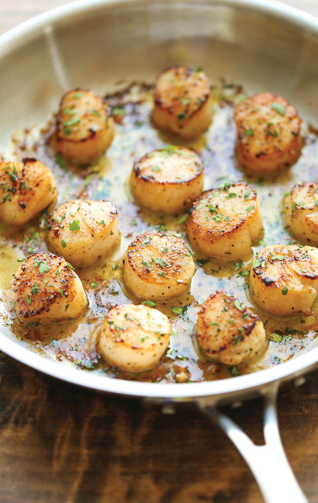

Lemon Butter Scallops
All you need is 5 ingredients and 10 minutes for the most amazing, buttery scallops ever. Yes, it's just that easy and simple.

Ingredients
- 1 Tbsp unsalted butter
- 1 pound scallops
- Kosher salt and freshly ground black pepper, to taste
For the Lemon Butter Sause
- 2 Tbsp unsalted butter
- 2 cloves garlic, minced
- Juice of 1 lemon
- Kosher salt and freshly ground black pepper, to taste
- 2 Tbsp chopped fresh parsely leaves
Directions
- Melt 1 tablespoon butter in a large skilet over medium high heat.
- Remove the small side muscle from the scallops, rinse with old water and thoroughly pat dry.
- Season scallops with salt and pepper, to taste. Workingin batches, add scallops to the skillet in a single layer and cook, flipping once, until golden brown and translucent in the center, about 1-2 minutes per side. Set aside and keep warm.
- To make the lemon butter sauce, melt 2 tablespoons butter in the skillet. Add garlic and cook, stirring frequently, until fragrant, about 1 minute. Stir in lemon juice; season with salt and pepper, to taste.
- Servce scallops immediately with lemon butter sauce, garnished with parsley, if desired.
Credit
Home